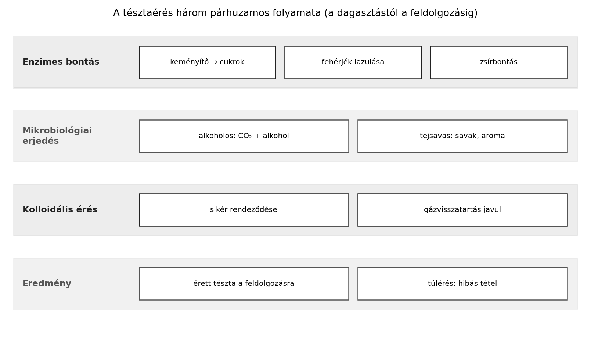

Hajnali kenyérsütéskor a dagasztás után a tészta nem azonnal megy az osztóba. A pék letakarja a kádat, és hagyja pihenni. Ha azonnal feldolgozná, a tészta rövid, szakadós, nehezen formázható lenne; a megsült kenyér pedig vastag héjú, kicsi, tömör bélzetű lehet. A dagasztás megkezdte a fehérje- és keményítőszemcsék vízfelvételét, de a tészta még nem „érett”: a sikérháló rendezetlen, a gázbuborékok kicsik, az enzim- és élesztőfolyamatok még csak beindultak. A tésztaérés az a rövid vagy hosszabb pihentetési szakasz, amely alatt ezek a folyamatok összeérnek, és a tészta feldolgozhatóvá, süthetővé válik.
Képzeljük el az építkezést: a dagasztás a beton elkeverése – a cement, a víz és a sóder összekeverése. A friss beton még nem teherhordó; ha azonnal terhelnénk, szétfolyna. A kötés és a szilárdulás időt igényel: a cement és a víz kémiai reakciója merev vázzá alakítja a keveréket. A kenyértészta hasonlóan viselkedik: a dagasztás szétdolgozza, levegőt visz be, és a sikérfehérjék láncait részben rendezi. Az érés során azonban a fehérjeláncok tovább duzzadnak és összekapcsolódnak, az enzimek apróbb, oldható anyagokat szabadítanak fel, az élesztő és a tejsavbaktériumok gázt és savat termelnek. A tészta ettől válik rugalmassá, nyújthatóvá és gáztartóvá, hasonlóan ahhoz, ahogy a beton a kötés után elbírja a terhelést.

Definíció. A tésztaérés a dagasztás után lejátszódó, időben szabályozott pihentetési szakasz, amelyben az enzimes, mikrobiológiai és kolloidális folyamatok hatására a tészta sikérhálója rendeződik, gázvisszatartó képessége nő, és a tészta az adott termék feldolgozásához, kelesztéséhez és sütéséhez optimális állapotba kerül. A tésztaérés nem azonos a kelesztéssel, bár a kettő átfedhet: az érés elsősorban a belső szerkezet és a feldolgozhatóság javulását, a kelesztés a tészta térfogatnövekedését jelenti.
A tésztaérés hossza függ a tésztakészítési eljárástól, a liszt tulajdonságaitól, a tészta hőmérsékletétől és összetételétől. Kovászos vagy hosszú, közvetett eljárású tészta esetén az érés részben már az előtésztában vagy a kovászban megtörténik; közvetlen eljárású tésztánál külön pihentetési szakaszt alkalmaznak. A paramétereket mindig a gyártmánylap vagy az üzemi technológiai lap rögzíti (ellenőrizendő: a pékség saját technológiai előírása).
A lisztben és a hozzáadott sütőjavító készítményekben aktív enzimek vannak, amelyek a vízfelvétel után felgyorsulnak. Az érés során ezek a makromolekulákat (keményítő, fehérje, zsír) kisebb, oldható, a tésztát tovább építő egységekre bontják.
A búzalisztben természetesen jelen lévő α-amiláz és β-amiláz elsősorban az őrléskor megsérült keményítőszemcsékből szabadít fel maltózt, glükózt és dextrineket; az ép szemcsék csak a sütés közbeni csirizesedéskor válnak könnyen bonthatóvá. A maltóz a sütőélesztő legfontosabb tápanyaga; nélküle az élesztő csak a tésztába kerülő kis mennyiségű szabad cukrot tudná erjeszteni, és a gáztermelés korán leállna. A dextrinek a sütés során a héj színeződéséhez és a bélzet nedvességmegtartásához járulnak hozzá. Ha a keményítőbontás túl erős (például csírázott gabonából őrölt liszt, túladagolt amiláz), a bélzet ragacsos, vizes kenyeret ad; ha túl gyenge, a gáztermelés lassú, a héj halvány marad (a pontos enzimaktivitás-mérés a laboratóriumi lisztvizsgálatok tárgya; lásd A liszt sütőipari vizsgálatai alfejezetet).
A liszt proteáz enzimjei a sikérfehérjéket (gliadin, glutenin) kisebb peptidekre hasítják. Ez kettős hatású: kis mértékű bontás lazítja a túl merev, rövid sikért, javítja a nyújthatóságot és a formázhatóságot. Túlzott proteázaktivitás esetén a sikérháló meggyengül, a tészta folyóssá, ragacsossá válik, nem tartja meg a gázt. A fehérjebontás mértéke függ a liszt érettségétől, a tészta savfokától és a pihentetési időtől. A kovászos rozstésztában a savanyítás főként az amiláz működését fékezi és a pentozánok duzzadását segíti (lásd: A kovászolás célja és a kovász technológiai mutatói); a proteázaktivitás pH-függése lisztfüggő (ellenőrizendő: lisztspecifikus enzimaktivitás a gyártói adatlapon).
A liszt kis mennyiségű lipáz enzime a tésztában lévő zsiradékot (a liszt saját zsírját vagy a hozzáadott olajat, margarint) glicerinre és szabad zsírsavakra hidrolizálja. A szabad zsírsavak befolyásolják a tészta állományát, az aromaképződést és a héj szerkezetét. A folyamat lassú, a hosszú érésű kovászos tésztákban érvényesül. Túlságosan hosszú tárolásnál a zsírbontás avasodáshoz vezethet, ezért a teljes kiőrlésű lisztet és a zsiradékot hűvös, száraz helyen kell tartani.
A tésztaérés alatt a mikroorganizmusok – a sütőélesztő és a kovászkultúra baktériumai – is aktívan dolgoznak. A termelt gázok és szerves savak egyszerre lazítják a tésztát és alakítják a sikérhálót.
A sütőélesztő (Saccharomyces cerevisiae) a keményítőbontásból származó cukrokat (glükóz, maltóz) felveszi, és anaerob körülmények között főként etanolt és szén-dioxidot termel. A szén-dioxid beoldódik a tészta vizes fázisába, majd buborékokat képez, amelyeket a sikérháló zár közre. Az alkohol a sütés során nagy részt elpárolog, de az aromaképződéshez is hozzájárul. Az erjedés sebessége a hőmérséklet emelkedésével nő; a tésztaérésnél a pék ezért a tésztahőmérsékletet pontosan beállítja (a dagasztóvíz-számítást lásd Tésztahőmérséklet és dagasztóvíz számítása alfejezetben). Ha a tésztát túl melegen tartják, az élesztő túl gyorsan dolgozik, a tészta hamar túlérik, és a szerkezet összeeshet; ha túl hidegen, az érés elhúzódik.
A kovászos tésztákban, illetve a hosszú érlelésű tésztákban tejsavbaktériumok is jelen vannak (például Lactobacillus fajok – a konkrét fajok az üzemi kovászkultúrától függenek). A tejsavbaktériumok a cukrokból tejsavat, kisebb mennyiségben ecetsavat termelnek. A savak csökkentik a tészta pH-ját, ami:
A tésztaérés során a pH fokozatosan csökken; a tapasztalt pék ezt a savfok mérésével vagy érzékszervileg (szag, íz) követi nyomon. A tejsavas erjedés fontos része a kovászos rozs- és búzakenyerek gyártásának, de a közvetlen élesztős tésztában is megindulhat, ha a tészta hosszabb ideig pihen.
A tészta kolloid rendszer: a sikérfehérjék és a pentozánok nagy vízmegkötő képességű, duzzadt részecskék, amelyek között szabad víz, oldott só, cukor és gázbuborékok oszlanak el. A dagasztás után a sikérháló még durva, a fehérjeláncok rendezetlenül állnak, és a víz egy része a felületen marad. Az érés alatt:
A tésztaérés során a pék ezeket a jeleket figyeli: a tészta felülete sima, enyhén száraz tapintású, ujjbenyomás után lassan visszaugrik, és a tészta jól nyújtható anélkül, hogy szakadna.
Az érés közben a tészta felpuffad, a keletkezett gázbuborékok eloszlanak, de a nagyobb buborékok összeolvadhatnak, és a tészta belsejében hőmérséklet- és nedvességkülönbségek alakulnak ki. Az átgyúrás (köznyelvben átdolgozás) olyan enyhe, rövid dagasztási művelet, amelyet a tésztaérés közben vagy annak végén végeznek.
Az átgyúrás célja:
Az átgyúrást kézzel vagy alacsony fokozatú dagasztógéppel végzik, rövid ideig, óvatosan. A túl erős vagy túl hosszú átgyúrás a sikérhálót rombolja, a tésztából ragacsos, folyós masszát csinál, és a termék térfogata csökken.
Definíció. Az érett tésztára dagasztás a hazai sütőipari szóhasználatban tésztakészítési eljárás: az előző tételből visszatartott, érett tésztát (a liszt 5–20%-ának megfelelő mennyiséget – ellenőrizendő: kerettanterv, sütőipari szakkönyv) az új tésztába dagasztjuk; ez gyorsítja a tésztaérést, javítja az ízt és a gázvisszatartást (hasonló a külföldi „régi tészta” / pâte fermentée eljáráshoz). A pontos meghatározás és a mennyiség forrással ellenőrizendő (ellenőrizendő: a kerettanterv szerinti értelmezés).
Szabály (külön az eljárástól). A már megért tésztát nem dagasztjuk tovább hosszan: a dagasztást a tésztaérés kezdeti szakaszában be kell fejezni, a befejező szerkezeti változásokat a pihentetésre kell bízni. Ha a pék az érett tésztát újra teljes dagasztásnak teszi ki, a gázvisszatartó háló sérül, és a termék térfogata, bélzete romlik.
A gyakorlatban a fenti szabály miatt a kelesztőasztalnál a pék a tésztát hajtogatással vagy finom átgyúrással kezeli, nem pedig hosszú gépi dagasztással. A kézi hajtogatás lépései: (1) a megkelt tészta felületét enyhén meglisztezed; (2) tenyérrel óvatosan lenyomod, hogy a nagy buborékok távozzanak; (3) a tésztát négy oldalról egymás után középre hajtod; (4) átfordítod, hogy a hajtások varrata alulra kerüljön; (5) visszatakarod, és hagyod tovább érni.
A képsor számozása a fenti lépésekével egyezik. A tipikus hiba a 6. kép: ökölbe szorított kézzel „kigyúrni” vagy gépben újra hosszan dagasztani a tésztát – ez a már kiépült sikérhálót rombolja, a tészta ragacsos lesz, a termék térfogata csökken. Tiszta kézzel, a lehető legkevesebb liszttel dolgozz, és a ládát a hajtogatás után azonnal takard vissza, hogy a felület ne száradjon ki. A HTML-változatban a lépések egyenként lejátszhatók. Ha a receptúra vagy a technológiai lap feladási időt ír elő, az átgyúrás időpontja a teljes érési idő harmada vagy fele körül van (tanulási példa, ellenőrizendő: az üzemi technológiai lap).
A tésztaérés nélkül a péktermékek minőségi hibái:
A megfelelő érési idővel és átgyúrással a pék egységes pórusszerkezetet, jó térfogatot, vékonyabb, szép héjat és jobb ízt ér el. A tésztaérés a késleltetett, hűtő-kelesztős eljárásoknál is központi szerepet játszik: a hidegben lelassuló enzim- és mikrobiológiai folyamatok lehetővé teszik, hogy a tészta éjszaka is érjék, majd másnap süssék (lásd Késleltetett és megszakított kelesztés alfejezetet).
Továbbvitt eredmény. A tésztaérés folyamatai (enzimes bontás, alkoholos és tejsavas erjedés, kolloidális sikérérés) és az érettség jelei közvetlenül szükségesek a Közvetlen, közvetett és különleges tésztakészítési eljárások alfejezetben, ahol a különböző tésztakészítési rendszerek közötti választás éppen az érés időbeli elosztásán alapul. A tészta gázvisszatartása és a pórusképződés viszont az A kelesztés célja, feltételei és folyamatai alfejezet alapja.
Egy kisüzemi pékségben a pék reggel a fehér kenyér tésztáját dagasztja. A recept szerint a dagasztás után a tészta 20 percig pihen, majd jön az átgyúrás. A tanuló egyszer kihagyta az átgyúrást, és a tésztát azonnal az osztóba tette. Az osztott darabok felülete ragadt, a gömbölyítőgépben a darabok szétterültek, a formázott kenyerek a kelesztőben laposak maradtak. A kisütött kenyér térfogata a szokásosnál kb. 15–20%-kal kisebb volt, a bélzet tömör, a héj vastag. A pék visszavezette a hibát a kimaradt pihentetésre: a sikérháló nem lazult meg, a tészta rövid és rugalmasan visszaugró volt, az élesztő gáztermelése még nem indult be egyenletesen. A második adag tésztát a tanuló a megadott 20 percig pihentette, majd óvatosan átdolgozta, és a termék minősége helyreállt. Ez az eset mutatja, hogy a tésztaérés nem „elvesztegetett idő”, hanem a termék minőségét meghatározó technológiai lépés.
A tésztaérés ellenőrzése a gyártás közben:
Higiénia. A hosszú érlelésű tészta mikrobiológiai kockázatot jelent, ezért a pihentető edényeket minden használat után el kell mosni és fertőtleníteni, a tészta hőmérsékletét és idejét a HACCP-terv szerint kell dokumentálni (ellenőrizendő: a pékség HACCP-terve).
1. feladat (A) Sorold fel a tésztaérés három fő folyamatcsoportját, és mindegyikhez írj egy mondatot a szerepéről!
2. feladat (A) Magyarázd meg, mi a különbség a tésztaérés és a kelesztés között!
3. feladat (B) Egy tésztakészítési technológiai lap szerint a dagasztás után a tészta első pihentetése 30 perc, majd átgyúrás következik. A pék kihagyta az átgyúrást, és a tésztát további 60 percig pihentette. Milyen várható tésztatulajdonságok és termékhibák alakulhatnak ki? Indokold!
4. feladat (B) Sorolj fel legalább négy jelet, amellyel megállapítható, hogy a tészta elérte a feldolgozásra alkalmas érettséget!
5. feladat (C) Egy pékségben a kovászos kenyér tésztája a szokásosnál gyorsabban érik, és a pH-ja túl alacsony lesz. Milyen technológiai beállításokat változtatnál meg (hőmérséklet, idő, kovászaránya), és miért? Nevezd meg, melyik HACCP-ellenőrzési pontot érinti a változtatás!
6. feladat (D) A tanuló a kelesztőben felejtette a búzakenyér tésztáját: a tészta erősen felpuffadt, felülete nedves, szaga savanykás. Az érzékszervi vizsgálat szerint a tészta túlérett. Mit tegyen a pék, és mit semmiképpen ne tegyen? Indokold a választ a sikérháló és a gázvisszatartás ismeretében!
1. feladat megoldása
A három fő folyamatcsoport: enzimes folyamatok (keményítőbontás → maltóz
az élesztőnek; fehérjebontás → sikérlazítás; zsírbontás → aroma és
állomány), mikrobiológiai folyamatok (alkoholos erjedés élesztővel → CO₂
és etanol; tejsavas erjedés baktériumokkal → savak, pH-csökkenés),
kolloidális folyamatok (sikérduzzadás, rendeződés, gázvisszatartás).
2. feladat megoldása
A tésztaérés a dagasztás utáni pihentetés, amelynek során a belső
szerkezet (sikérháló, enzimatikus és mikrobiológiai átalakulások) eléri
a feldolgozásra alkalmas állapotot. A kelesztés a megformázott tészta
utolsó, sütés előtti térfogatnövekedése, ahol a gáztermelés és a
gázvisszatartás együttesen növeli a termék térfogatát. A kettő átfedhet,
de célja elkülöníthető.
3. feladat megoldása
Az átgyúrás elmaradása miatt a nagy gázbuborékok összeolvadnak, a tészta
hőmérséklete és nedvessége egyenetlen marad. A hosszú pihentetés alatt
az élesztő tovább termel gázt, a tészta túlérik: a sikérháló meggyengül,
a felület ragadós lesz. A formázott darabok szétterülnek, a kelesztésnél
a gázvisszatartás romlik, a kenyér térfogata kicsi, bélzete egyenetlen,
vastag héjú lesz.
4. feladat megoldása
A tészta felülete sima, enyhén száraz; ujjpróbánál a benyomott mélyedés
lassan, de visszaugrik; a tészta vékony hártyává nyújtható anélkül, hogy
szakadna; kovászos tésztánál kellemes, enyhén savanykás szag; a
gázbuborékok aprók, egyenletesek, a tészta nem esik össze.
5. feladat megoldása
Ha a tészta túl gyorsan érik és pH-ja túl alacsony, csökkenteni kell az
érési hőmérsékletet (hidegebb dagasztóvíz, hűtősebb kamra), csökkenteni
a kovász arányát, vagy rövidíteni az érési időt. Ezzel lassítjuk a
tejsavbaktériumok szaporodását és savtermelését. A HACCP-szempontból a
tészta pH-ja és hőmérséklete monitoring pont, a határértékeket az üzemi
HACCP-terv rögzíti; a változtatás után ellenőrizni kell a termék
érzékszervi jellemzőit (ellenőrizendő: a pékség HACCP-terve).
6. feladat megoldása
A pék ne gyúrja át újra erősen a túlérett tésztát, mert azzal a maradék
sikérhálót is tönkreteszi. Ha a tésztát még fel lehet használni,
óvatosan, hajtogatással formázhatja, de a legjobb, ha hibás tételként
kezeli, vagy kis arányban friss tésztához keveri, ha a gyártmánylap ezt
engedi. A túlérett tésztát sem szabad tovább pihentetni. A biztonság
kedvéért a tételt jelölni kell, és a minőségi eltérést dokumentálni. A
gázvisszatartás romlott, a buborékok összeolvadtak, ezért a sütés előtti
formázás már nem hoz helyre mindent.
A tésztaérés a dagasztás utáni, szabályozott pihentetési szakasz, amelyben az enzimes folyamatok (keményítő-, fehérje- és zsírbontás), a mikrobiológiai erjedés (alkoholos és tejsavas) és a kolloidális változások (sikérduzzadás, rendeződés, gázvisszatartás) révén a tészta feldolgozhatóvá és süthetővé válik. A keményítőbontásból származó maltóz táplálja az élesztőt; a fehérjebontás lazítja, a savak stabilizálják a sikért. Az érés jelei: sima, száraz felület, lassú visszarugózás az ujjpróbánál, jó nyújthatóság, kellemes szag. Az átgyúrás rövid, óvatos átdolgozás, amely a gázbuborékokat aprítja, a tésztát homogenizálja. Az érett tésztára dagasztás az előző tételből visszatartott érett tészta új tésztába dagasztása (ellenőrizendő); külön szabály, hogy a megért tésztát nem dagasztjuk tovább, különben a sikérháló tönkremegy. A tésztaérés hibái (túl rövid, túl hosszú, elmaradt átgyúrás) térfogathiányt, ragadós vagy túlérett tésztát, tömör vagy lyukas bélzetet okoznak. A pontos paramétereket a gyártmánylap és a HACCP-terv rögzíti. Továbbvitt eredmény: a tésztaérés folyamatait a Közvetlen, közvetett és különleges tésztakészítési eljárások és az A kelesztés célja, feltételei és folyamatai alfejezetek használják fel.